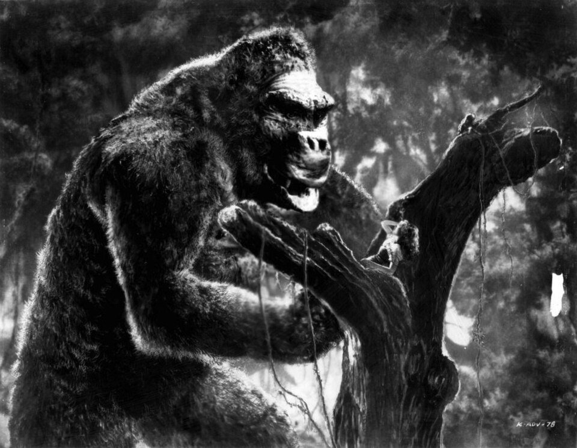

King Kong, Publicity Photograph
Merian C. Cooper and Ernest B. Schoedsack · 1933 · Publicity still, black and white
In copyright. Look and learn: shown for study, not for download.
The stop-motion animator Willis O'Brien, hearing that Merian C. Cooper wanted to make a gorilla film, painted a large gorilla carrying a woman and gave the picture to him. For one sequence Fay Wray spent 22 hours sitting in a fake tree, acting out her reaction to a stop-motion battle projected on a translucent screen. The film cost $672,254.75 and opened in New York on 2 March 1933. The copy of this publicity photograph that was scanned is date-stamped 24 October 1975.